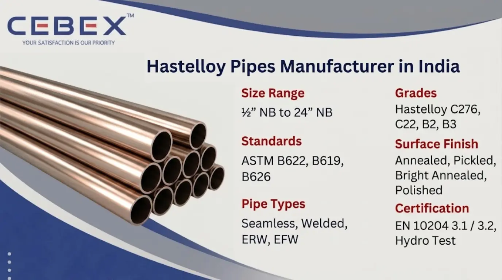

CEBEX STEEL INDIA is a leading Hastelloy Pipes Manufacturer in India offering ASTM B622, B619, B626 pipes in C276, C22, B2, B3 grades.
In highly corrosive and aggressive industrial environments, the performance and durability of piping systems depend on the material–s resistance to chemical attack and high temperatures. As a leading Hastelloy Pipes Manufacturer in India, CEBEX STEEL INDIA supplies high-performance Hastelloy pipes engineered for critical applications requiring superior corrosion resistance and long service life.
Hastelloy is a nickel-molybdenum-chromium alloy known for its exceptional resistance to oxidizing and reducing environments, making it ideal for industries such as chemical processing, petrochemical, oil & gas, power generation, and pollution control. Our Hastelloy pipes are manufactured in compliance with international standards including ASTM, ASME, DIN, and EN, ensuring reliability in global industrial applications.
Our manufacturing capabilities include seamless, welded, ERW, and EFW pipes produced with advanced technology, strict quality control, and precision engineering for consistent performance in demanding conditions.

Selecting the right Hastelloy Pipes Manufacturer in India is essential for ensuring operational safety, corrosion resistance, and long-term performance. CEBEX STEEL INDIA is recognized for its strong technical expertise, certified quality systems, and global export capabilities.
We manufacture Hastelloy pipes as per ASTM B622, ASTM B619, ASTM B626, and ASME equivalents. Each pipe undergoes rigorous inspection including PMI testing, hydrostatic testing, ultrasonic testing, and mechanical testing to ensure reliability under extreme conditions.
Our facility maintains full traceability from raw material to finished product through heat numbers and batch records. All shipments are supplied with EN 10204 3.1 / 3.2 Mill Test Certificates along with inspection and compliance documentation.
We also provide strong export support with secure packaging, timely delivery, and complete documentation for shipments to Africa, the Middle East, Europe, and Southeast Asia.
Our Hastelloy pipes are manufactured using premium nickel alloys and designed for high corrosion resistance and durability.
| Feature | Specification / Detail |
|---|---|
| Product Type | Hastelloy Pipes |
| Standards | ASTM B622, B619, B626 |
| Grades | Hastelloy C276, C22, B2, B3, C2000, G30 |
| Types | Seamless, Welded, ERW, EFW |
| Size Range | –– NB to 24– NB |
| Schedules | SCH 5, SCH 10, SCH 40, SCH 80, SCH 160, XXS |
| Standards (Dim.) | ASME B36.10, ASME B36.19 |
| Surface Finish | Annealed, Pickled, Bright Annealed, Polished |
| Certification | EN 10204 3.1 / 3.2, NDT, PMI, Hydro Test |
These pipes provide exceptional resistance to pitting, stress corrosion cracking, and oxidizing chemicals.
Material selection is critical in corrosive environments. We supply Hastelloy pipes in multiple grades suitable for different industrial applications.
| Grade | UNS Number | Typical Applications |
|---|---|---|
| Hastelloy C276 | N10276 | Chemical processing, pollution control |
| Hastelloy C22 | N06022 | Acid production, waste treatment |
| Hastelloy B2 | N10665 | Hydrochloric acid applications |
| Hastelloy B3 | N10675 | Chemical processing |
| Hastelloy C2000 | N06200 | Multi-acid environments |
| Hastelloy G30 | N06030 | Phosphoric acid, fertilizers |
| Category | Standards |
|---|---|
| Pipe Standards | ASTM B622, B619, B626 |
| ASME Standards | ASME SB622, SB619, SB626 |
| Dimensional Standards | ASME B36.10, B36.19 |
| International | DIN, EN, ISO |
We manufacture a comprehensive range of Hastelloy pipes for various industrial applications. Seamless pipes are ideal for high-pressure and high-temperature systems due to their uniform structure and strength. Welded pipes, including ERW and EFW, are suitable for large diameter and structural applications where cost efficiency is required.
We also supply custom pipes with specific wall thickness, tolerances, and finishes to meet exact project specifications and engineering requirements.
Hastelloy alloys offer superior corrosion resistance due to high nickel and molybdenum content.
| Grade | Tensile Strength (MPa) | Yield Strength (MPa) | Elongation | Hardness |
|---|---|---|---|---|
| Hastelloy C276 | 690 | 283 | 40% | 250 HB |
| Hastelloy C22 | 690 | 310 | 45% | 250 HB |
| Hastelloy B2 | 760 | 350 | 40% | 240 HB |
| Hastelloy B3 | 690 | 310 | 40% | 240 HB |
These properties ensure performance in highly aggressive and acidic environments.
We manufacture Hastelloy pipes in a wide dimensional range suitable for industrial applications.
| Size (NB) | OD (mm) | Thickness (mm) | Weight (kg/m) |
|---|---|---|---|
| –– | 21.3 | 2.77 | 1.27 |
| 1– | 33.4 | 3.38 | 2.68 |
| 2– | 60.3 | 3.91 | 5.44 |
| 4– | 114.3 | 6.02 | 15.32 |
| 8– | 219.1 | 8.18 | 43.39 |
Custom sizes and schedules are available as per project requirements.
Hastelloy pipes are widely used in industries requiring exceptional corrosion resistance. These include chemical processing, petrochemical, oil & gas, pollution control, pulp & paper, and power generation industries.
Their resistance to aggressive chemicals, acids, and high temperatures makes them ideal for critical piping systems in harsh environments.
All Hastelloy pipes undergo rigorous inspection procedures including PMI testing, hydrostatic testing, ultrasonic testing, and mechanical testing. Each pipe is verified for dimensional accuracy and material integrity. EN 10204 3.1 / 3.2 certification ensures full traceability and compliance with international standards.
Pipes are packed using export-grade wooden cases, bundles, and protective materials to prevent transit damage. Each pipe is clearly marked with grade, size, and heat number. We provide complete export documentation including invoices, packing lists, test certificates, and certificates of origin for smooth international delivery.
As a leading Hastelloy Pipes Manufacturer in India, we supply high-quality pipes to major industrial projects across Africa. Our export team ensures smooth delivery with complete documentation and compliance. Our pipes are trusted across oil & gas, power, and infrastructure sectors in Nigeria, Egypt, Kenya, South Africa, and other regions.
In addition to Hastelloy Pipes, we also manufacture and export Duplex Stainless Steel Pipes , Super Duplex Pipes , Stainless Steel Pipes , Inconel Pipes , and Monel Pipes . These high-performance alloy pipes are designed for critical applications in oil & gas, petrochemical, power plants, desalination, and chemical industries.
Browse our full range:
CEBEX STEEL INDIA is known for delivering consistent quality, strong technical expertise, and reliable global export services. We provide high-performance materials, competitive pricing, and dependable supply solutions for industrial piping projects.
All pipes are manufactured as per ASTM B622, B619, B626 and ASME equivalents with full certification.
Hastelloy C276 and C22 are widely used due to their excellent resistance to aggressive chemicals and acids.
We supply pipes from –– NB to 24– NB with multiple schedules including SCH 5 to SCH 160.
Testing includes PMI, hydrostatic, ultrasonic, and mechanical testing to ensure quality and performance.
We export globally with complete documentation and logistics support.